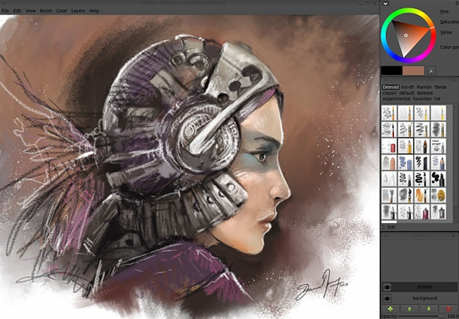
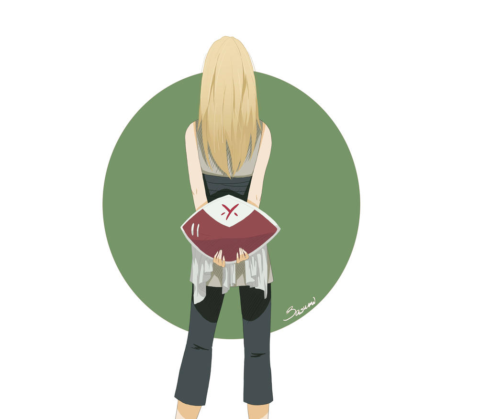
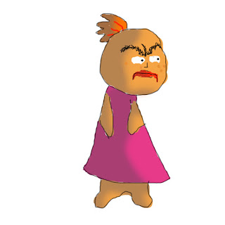

</header>
        <!-- ici, je commence une section de mon site -->
        <section>
            <h2> 1. Exemple de dessins graphique : </h2>
            <p> voici différents <strong>dessin graphique</strong></p>
            <p>realisé a l'aide de tablette graphique.</p>
            <!-- Un lien vers un article externe -->
            <a href="https://www.pinterest.fr/pin/765682374129348722/">dessin graphique(lien cliquable)</a>
            <br>
            <!-- Je peux aussi ajouter une image -->
            
            
            
            
            
            
        </section>